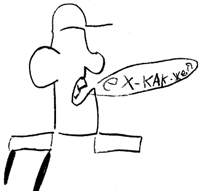
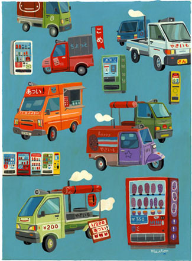
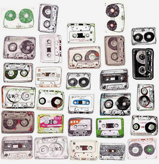
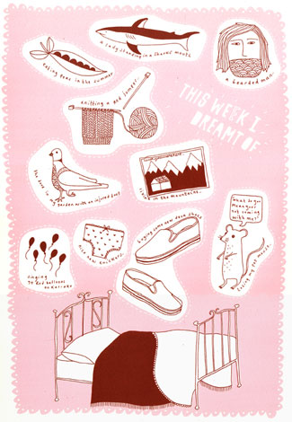
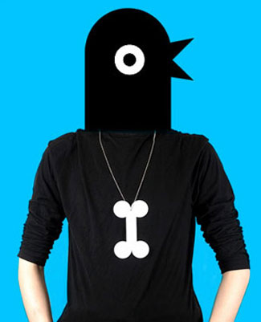
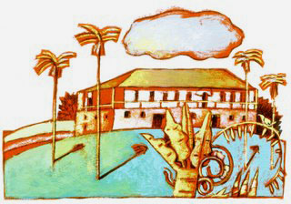
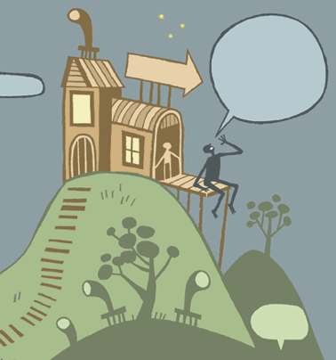
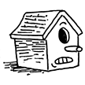

ВЫ УМЕЕТЕ РИСОВАТЬ ДОМИК? Я — НЕТ
Дело было году в 1981-ом, я рисовал домик (треугольничек на квадратике), на домике был флаг (буква М на боку), на котором, разумеется, звездочка. Ко мне подошла одна девочка и сказала: ты что, не умеешь рисовать звездочку? И показала, как надо, пятью пересекающимися линиями. Я был подавлен. Звездочка у меня была кривая, но честная, моя, без вот этих фокусов. Но путь назад был закрыт навсегда.
Виктор Меламед "Милиционер", ок. 1981 года

О те же времена я узнал, что морковку надо рисовать оранжевым карандашом, небо — синим, а в основе кота Леопольда — лежачая восьмерка, из которой растут три язычка, один вниз и два вверх. Чуть позже я освоил автомат и машинку и стал популярным. Однажды мне попало от бабушки, которая поймала меня за срисовыванием из какой-то книги человечка. Губы у того вместо бантика были сделаны двумя черточками: снизу покороче, сверху подлиннее.

Груз начального художественного образования многим не удается сбросить до глубокой старости. Едва встав на ноги, художник торопится обзавестись собственным алфавитом пиктограмм, выбирает фирменный носик, ротик и прочее, рассаживает, так сказать, бабочек на булавки, «формирует свой стиль»- но и сквозь него нет-нет, да и проскочит треугольник на квадрате, или при наличии определенной творческой жилки — призма на кубе. Детский сад*.
Чтобы написать книгу, недостаточно выучить миллион иероглифов. Высокий смысл и кайф рисования — как раз в том, чтобы отделаться от слов. Графика есть язык сама по себе.

(Спасибо Omami, за это и вообще).
Описанный выше домик, даже будучи обложенным каким-либо декором и с прорисованными досочками — все равно подобен человеку с руками, ногами и головой, но без лица. С человеком, впрочем, сложнее, пропорции формируют его характер едва ли не в большей степени, чем мимика, но предметы, будучи, как правило, деталями, требуют внимания, так сказать, к деталям себя.
Предмет без лица — это «какой-то» предмет. Иначе говоря, никакой. «Современная иллюстрация» может себе позволить все, что угодно — кроме вот этого.

Разумеется, и на этом можно сыграть, если свести к полному абсурду. Что намедни не без блеска проделал Протелло.

Кстати, домик он тоже нарисовал, очень кстати.
Друзья, пользуйтесь Google Image Search. Он все. Он сделает ваши иллюстрации много интереснее, застрахует от скукоты, расскажет, как выглядит ключица жирафа и водосточная труба у пагоды. Не верьте себе — память, как правило, хранит нечто усредненное; а рука автоматически выводит то, чему научили в детстве. И еще, выходите почаще на улицу и рисуйте все подряд.


Есть, впрочем, легенда о китайском живописце, который посвятил свою жизнь рисованию, например, стрекозы (у этого, кстати, точно была под рукой стрекоза), и постигнув ее в совершенстве, удовлетворенно скончался. Тоже, что называется, метод.

* Детская иллюстрация здесь совершенно ни при чем.